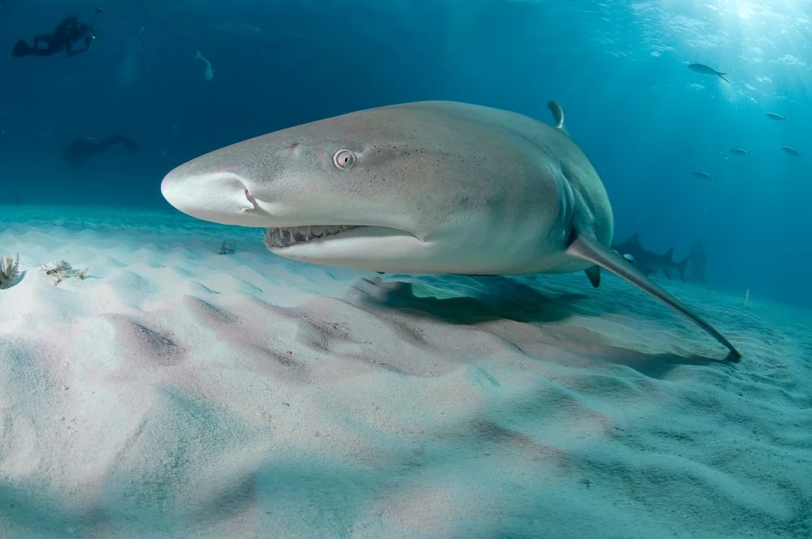
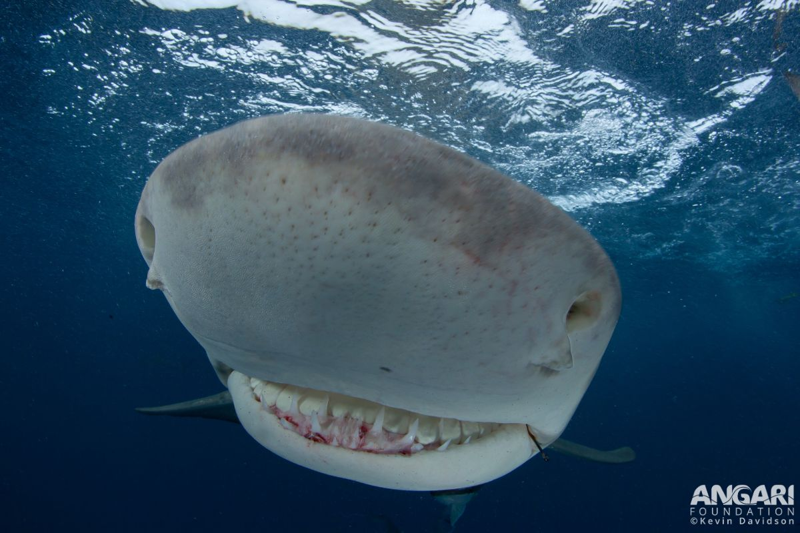

Marine Life
Shark/Ray
Lemon Shark

What are Lemon SHarks?
Lemon sharks is a species from the Carcharhinidae family.
Their yellow colouring serves as camouflage while swimming over sandy seafloors.
Lemon sharks can grow up to 3.4 metres in length their head is flattened with a short broad snout.
They use electroreceptors to find their pray mainly consisting of fish.
They are known for living in groups and enjoy it for the multiple beneifts, that includes courtship, predatory behaviour and protection.
Where do lemon sharks live?
Lemon sharks are found in shallow subtrobical waters and are knwon to inhabit coral reefs in waters.
This also includes inhabiting warm and shallow waters with rocky or sandy bottoms.
The tempreture of their enviourment is really important to maintain their metabolic levels.

Impacts of humanity
Lemon sharks have become a target for hunting.
They are seen as valueable because of their meat, fins and skin, they are also used for leather.
Because of the access to fishing and their methods lemon shark populations in the western noth Atlantic and east pacific are rapidly declining.
Lemon sharks aren't a threat to humanity, but because of human greed and lack of laws preventing this mass fishing we humans have become a theat to their populations.
Its terrible how humans are slowly killing off this sweat and harmless species just to mass produce more products that will go back into their enviourment and harm them.